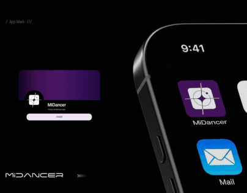

Digital experiences.
Made to move you
forward.
We design and build websites, digital products and interfaces that make ambitious brands easier to understand, use and remember.
↓Independent thinking.Part of CRAFX Studio.
Thoughtful by design.
Useful by nature.
A focused selection of website and interface work from the CRAFX Studio ecosystem.
 ↗
↗Optellix

↗Fitness App
A little more than
just pixels.
CRAFX DEV is the digital side of CRAFX Studio—bringing design thinking and development together to create purposeful websites and digital products. Backed by a multidisciplinary creative studio, we look beyond screens to understand the brand, the people using it and the job the experience needs to do.
Meet CRAFX Studio ↗Digital, from
every angle.
The right mix of clarity, craft and technology for what you need to move forward.
01Website design & development+
Custom marketing and corporate websites, designed responsively and built around the way your customers make decisions.
Websites · Front-end · CMS02UI/UX & product design+
Clear user journeys, useful interfaces and thoughtful systems for web applications and mobile products.
Research · Flows · Interfaces03Landing page design+
Focused campaign and launch pages that bring the message into focus and make the next step obvious.
Campaigns · Launches · Lead generation04SaaS & digital products+
Product websites, dashboards and interactive experiences that make complex services easier to understand and use.
SaaS · Web apps · Product interfaces05Website redesign+
A sharper visual system, clearer structure and responsive experience for a site that has outgrown its current form.
UX refresh · Information architecture · Responsive design06Creative development & motion+
Considered interactions and interface motion that add character while keeping the experience effortless to use.
Micro-interactions · Scroll motion · Interactive storiesClear steps.
Good work.
A collaborative process that keeps the purpose in view from first conversation to handover.
- 01
Understand
Goals, audience, context and requirements.
- 02
Define
Structure, content direction and user journeys.
- 03
Design
Visual direction, interface and responsive behaviour.
- 04
Build
Turn approved designs into a working experience.
- 05
Refine & launch
Test, optimise and prepare everything for handover.
Let’s make it
mean something.
Tell us what you’re working on. Let’s shape the digital experience around it.
Start a project ↗